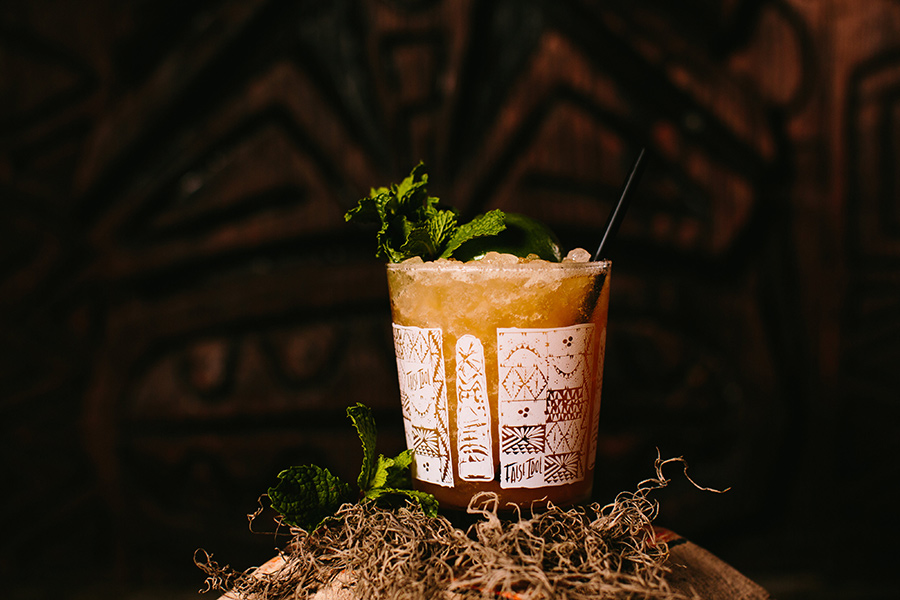
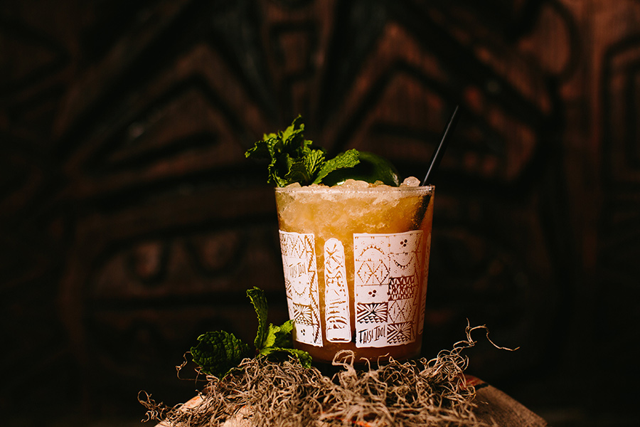
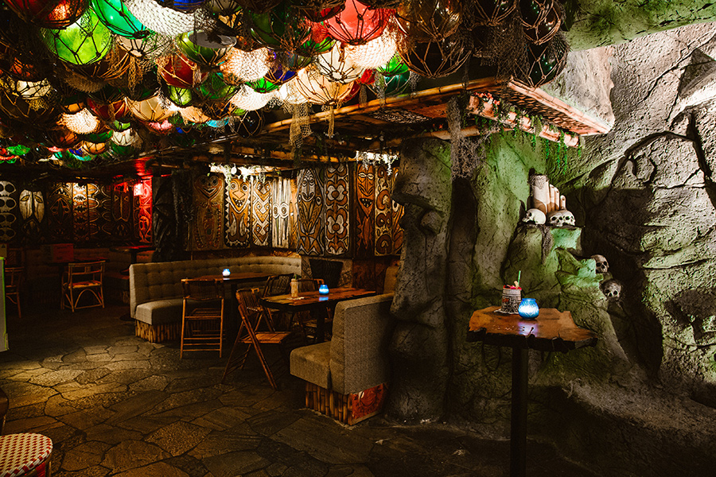
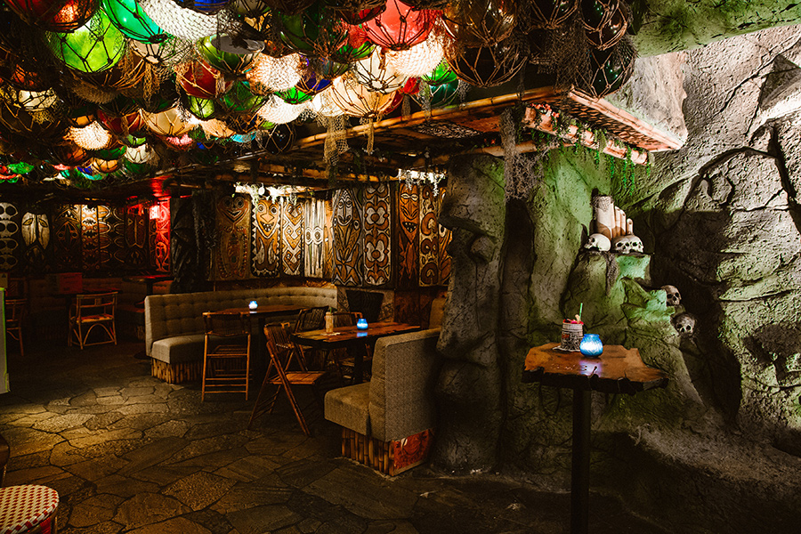
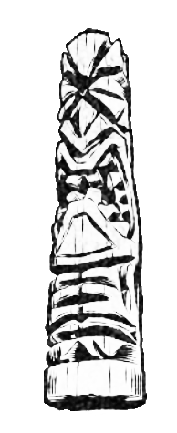

Polynesian inspired speakeasy featuring historic drinks pulled from San Diego’s own tiki days.
 

About
Hidden in plain sight, a step through an unassuming secret entrance within Craft & Commerce transports guests to a faux tropical paradise complete with traditional Polynesian elements of fire & ice, all fashioned by a team of legendary tiki artists to create a fully immersive environment that pays tribute to the imagined “false idols” of mid-century American worship.

 

Original Cocktails
-
Mai Tai
The elegance and simplicity of this iconic beverage shows that rich flavorful rums need only the most gentle of accessories (dry curacao, fresh lime, and orgeat) to achieve perfection. Trader Vie’s masterpiece. $14
-
Mai Sha Roa Na
Blended Jamaican rum, madeira, banana liquer, vanilla macademia nut cordial, brightened with fresh lemon. There’s more than one way to showcase a great rum. $14
-
151 Swizzle
Overproof black Demerara rum, fresh lime, and sugar, spiced with Angosturra bitters and Herbsaint. Don the Beachcomber’s extra crisp, simple and frosty spin on the Planter’s Punch. $13
-
Chartreuse Swizzle
A generous splash of herbaceous Green Chartreuse rounded with falernum, pineapple and a bit of fresh lime. From Marcovaldo Dionysos of San Francisco’s Smuggler’s Cover. $15
-
Pearl Diver
A blend of two aged rums, orange, lemon, spiced bitters, and our version of Don’s Gardenia Mix - a spiced butter cordial. “Plenty of lung capacity required for this one.” - Kon Tiki, 1962 $13
-
Polynesian Forty Niner
Orange-chai-infused-bourbon, pear brandy, lemon and orange, rounded with Don’s decadent Gardenia Mix. You’ll find gold in these treacherous waters. $14
-
Singapore Sling
London dry gin, Cherry Heering, Benedictine, sparkling water, fresh lemon and a dash of bitters. The tall fizzy thirst-quenching classic from the Raffles Hotel, circa 1915. $13
-
Shelter Island Sling
Rhum agricole blanc, London dry gin, Fruitlands Passion Fruit and Guava Ale. Creme de Cassis, Benedictine, and fresh lemon. Dry, tropical and truly refreshing … A proper dedication to all things San Diego! $14
-
Eastern Sour
Japanese whisky, orgeat, squeezed-to-order lemon and orange. The Whisky Sour made exotic through the able hands of Trader Vic. $13
-
Ode to Okolehao
Bourbon, vanilla macademia nut cordial, squeezed-to-order lemon and orange. “Keep away from the okolehao. A few gulps, and you hit the ceiling for eternity.”- Charlie Chan $13
-
Doctor Funk
A healthy dose of full-bodied Jamaican black rum, Herbsaint, grenadine, fresh lemon, and fresh lime. This prescription will cure any infirmity, as well as restore loss of mind from the heat! Good thing the doctor is always in. $15
-
Coronado Luau Special
Blended lightly aged rum and black rums are combined with brandy, dry curacao, orgeat, lemon, and orange. An original from the long lost Luaua Room, right here in San Diego’s famous Hotel Del Coronado. $14
-
El Especial
Overproof blanco tequila and a blend of light and dark rums meet fresh citrus juices, cinnamon, and Agua Fresca de Tamarindo to create the ideal Baja refresher. $14
See More
-
Demerera Dry Float
Deep, rich 8 year old Demerera Rum, Maraschino Liqueur, passion fruit, and lots of fresh lime. Served with a "Side of Danger." Another classic from Don the Beachcomber ... Crisp, tropical, and dangerous!!! Beware!! $14
-
Enigma de Muerte
Blanco Tequils, lime, Maraschino Liqueur, and passion fruit, lengthened with fresh lime. Con costado de peligro! $14
-
Saturn
London dry gin, lemon, orgeat, falernum, and passionfruit. J. "Popo" Gallini's brilliant drink won him the 1967 IBA World Cocktail Competition ... for greatness. $13
-
Hyperion
Some day we may colonize a distant moon ... For now, we drink on Saturn's moon. Pisco, Cachaca, cirtus, tropical fruit and spice. $13
-
Doctor Wayne
Plent of rich and funky Jamaicain Rum paired with creme de cacao, fresh citrus, spiced bitters, and Absinthe. The doctor will be with you shortly. $15
-
Tradewinds
A blend of aged and black rums, apricot liqueur, coconut cordial, then made crisp with lashings of fresh lemon. Hailing from Jamaica, circa 1970's. $13
-
Lana, Pearl of the Night
A blend of aged and black rums, lychee liqueur, Aperol, coconut cordial, and plenty of fresh lemon juice. A delicious fruit-forward journey to distant ports. $13
-
Navy Grog
Worthy of a seafaring officer! A bledn of multiple rums including navy strength pure pot-still Jamaican rum and fortified with pimento dram and fresh lime and grapefruit juice. $16
-
Sea Legs
All navy strength spirits: Pure pot still Jamaican rum, rhum agricole, and Plymouth Gin. Made smooth with cinnamon, grapefruit, and lime. Life on the open sea can be treacherous ... This will steady the wayward soul. $17
-
Steve's Rum Barrel
Every legendary tiki bar offered their own version of a hearty blend of rums and fruit juices, and each one was a lesson in mystery and potency. Here we celebrate the version offered by Steve Crane at hsi legendary Beverly Hills hotspot, The Luau. As Steve himself said, "Before ordering a third one, better check with your insurance man." $17
-
Alkala's Rum Barrel
Speaking of hearty blends! This trio of cask strength spirits is fit for our house deity. Alkala!! He loves rum. He also loves his rum lovingly intertwined with a mix of ingredients we dare not to share. For if the recipe were to fall in the weong hands, Alkala would show no mercy! $18
-
Zombie
Donn's original lethal libation is a flawless study in balance, depth of flavor, and the precise execution of an almost impossible amount of rum with a hint of spice and citrus. A limit of two is in place for your own protection. $18
-
Le Fantome
A towering blend of high proof rhums from Martinique, grapefruit liqueur, champagne, fresh citrus and absinthe give only slight comfort to the terrors induced by Le Fantome! A limit of two is necessary!! The last person to drink three was cursed by its voodoo, and was never seen again... $22
-
Luaua Scorpion
A sprawling combination of aged rum, London dry gin, brandy, orgeat, and demerera cordial, accompanied by the juice of lime and orange. $20
-
Alkala the Fierce
Chai-infused bourbon meets aged and dark rum, vanilla, pimento dram, and orgeat. Beware the anger of our Idol, Alkala!! For he is merciless when enraged! $20